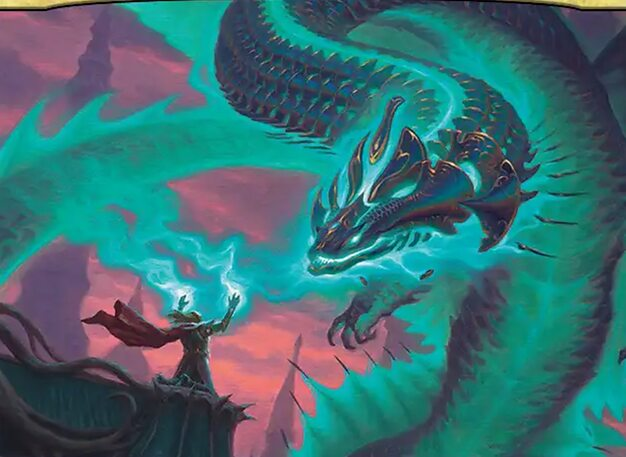

Which commanders win most often on your budget?
64 popular commanders per price class, each built as a budget deck and continuously tested against each other in Forge – with decklist, statistics and a Cardmarket shopping list.
See the rankings Find your commanderTest your own deck1 free slot left
So far 35,112 games in 224 tournaments with 448 decks. Latest tournament: – the site updates automatically afterwards.
Your favourites
Which commander suits you?
Three questions – we show the strongest matching decks from our tests.
Your top 3
Loading …
Rankings
The most successful decks up to €100 in the Forge simulation (Bracket 3: at most 3 Game Changers).
 Illustration: Eric Deschamps · © Wizards of the Coast
Illustration: Eric Deschamps · © Wizards of the CoastOloro, Ageless Ascetic
 Illustration: Kai Carpenter · © Wizards of the Coast
Illustration: Kai Carpenter · © Wizards of the CoastGiada, Font of Hope
 Illustration: Valera Lutfullina · © Wizards of the Coast
Illustration: Valera Lutfullina · © Wizards of the CoastUreni of the Unwritten
Rankings up to €100
from 51 tournaments Y'shtola, Night's BlessedElo 1668
Y'shtola, Night's BlessedElo 1668 Atraxa, Praetors' VoiceElo 1666
Atraxa, Praetors' VoiceElo 1666 Sephiroth, Fabled SOLDIER // Sephiroth, One-Winged AngelElo 1658
Sephiroth, Fabled SOLDIER // Sephiroth, One-Winged AngelElo 1658 The Ur-DragonElo 1657
The Ur-DragonElo 1657 Valgavoth, Harrower of SoulsElo 1654
Valgavoth, Harrower of SoulsElo 1654 Arcades, the StrategistElo 1634
Arcades, the StrategistElo 1634 Kaalia of the VastElo 1628
Kaalia of the VastElo 1628 Jodah, the UnifierElo 1620
Jodah, the UnifierElo 1620 Teysa KarlovElo 1612
Teysa KarlovElo 1612 Edgar MarkovElo 1604
Edgar MarkovElo 1604 Pantlaza, Sun-FavoredElo 1603
Pantlaza, Sun-FavoredElo 1603 Rin and Seri, InseparableElo 1590
Rin and Seri, InseparableElo 1590 Bello, Bard of the BramblesElo 1589
Bello, Bard of the BramblesElo 1589 Ygra, Eater of AllElo 1579
Ygra, Eater of AllElo 1579 Ashling, the LimitlessElo 1578
Ashling, the LimitlessElo 1578 Korvold, Fae-Cursed KingElo 1571
Korvold, Fae-Cursed KingElo 1571 Hakbal of the Surging SoulElo 1569
Hakbal of the Surging SoulElo 1569 Zhulodok, Void GorgerElo 1561
Zhulodok, Void GorgerElo 1561 Atla Palani, Nest TenderElo 1544
Atla Palani, Nest TenderElo 1544 Lathril, Blade of the ElvesElo 1544
Lathril, Blade of the ElvesElo 1544 Wilhelt, the RotcleaverElo 1533
Wilhelt, the RotcleaverElo 1533 Zurgo StormrenderElo 1523
Zurgo StormrenderElo 1523 The Wise MothmanElo 1515
The Wise MothmanElo 1515 Hearthhull, the WorldseedElo 1512
Hearthhull, the WorldseedElo 1512 Felothar the SteadfastElo 1504
Felothar the SteadfastElo 1504 Kefka, Court Mage // Kefka, Ruler of RuinElo 1499
Kefka, Court Mage // Kefka, Ruler of RuinElo 1499
Teval, the Balanced ScaleElo 1490 Muldrotha, the GravetideElo 1488
Muldrotha, the GravetideElo 1488 Ulalek, Fused AtrocityElo 1487
Ulalek, Fused AtrocityElo 1487 Caesar, Legion's EmperorElo 1481
Caesar, Legion's EmperorElo 1481 Chatterfang, Squirrel GeneralElo 1478
Chatterfang, Squirrel GeneralElo 1478 The Wandering MinstrelElo 1469
The Wandering MinstrelElo 1469 Baylen, the HaymakerElo 1458
Baylen, the HaymakerElo 1458 Vivi OrnitierElo 1453
Vivi OrnitierElo 1453 Meren of Clan Nel TothElo 1432
Meren of Clan Nel TothElo 1432 Aragorn, the UniterElo 1430
Aragorn, the UniterElo 1430 Cloud, Ex-SOLDIERElo 1424
Cloud, Ex-SOLDIERElo 1424 Yuriko, the Tiger's ShadowElo 1419
Yuriko, the Tiger's ShadowElo 1419 Ms. BumbleflowerElo 1410
Ms. BumbleflowerElo 1410 Isshin, Two Heavens as OneElo 1404
Isshin, Two Heavens as OneElo 1404 Maralen, Fae AscendantElo 1403
Maralen, Fae AscendantElo 1403 Esika, God of the Tree // The Prismatic BridgeElo 1391
Esika, God of the Tree // The Prismatic BridgeElo 1391 Animar, Soul of ElementsElo 1385
Animar, Soul of ElementsElo 1385 Mr. House, President and CEOElo 1383
Mr. House, President and CEOElo 1383 Tidus, Yuna's GuardianElo 1382
Tidus, Yuna's GuardianElo 1382 Frodo, Adventurous Hobbit // Sam, Loyal AttendantElo 1382
Frodo, Adventurous Hobbit // Sam, Loyal AttendantElo 1382 The NecrobloomElo 1360
The NecrobloomElo 1360 Sauron, the Dark LordElo 1358
Sauron, the Dark LordElo 1358 Kenrith, the Returned KingElo 1333
Kenrith, the Returned KingElo 1333 Hashaton, Scarab's FistElo 1332
Hashaton, Scarab's FistElo 1332 Flubs, the FoolElo 1305
Flubs, the FoolElo 1305| # | Commander | Elo | Form | Tier | Games | Price |
|---|---|---|---|---|---|---|
| 1 | | 1765▼8 | 3211313144 | S | 510 (4) | €96.09 |
| 2 | | 1708▼14 | 3432341312 | S | 511 (12) | €99.69 |
| 3 | | 1708▼14 | 4123434411 | S | 510 (2) | €98.45 |
| 4 |  | 1701▲20 | 2342111241 | S | 511 (3) | €95.82 |
| 5 |  | 1686▲17 | 4314131122 | S | 510 (1) | €95.16 |
| 6 |  | 1671▲6 | 3112124423 | S | 511 (10) | €100.00 |
| 7 | | 1668▼12 | 1324331233 | A | 511 (6) | €88.81 |
| 8 | | 1666▼5 | 2411224333 | A | 511 (13) | €99.96 |
| 9 | | 1658▲15 | 3113412431 | A | 510 (9) | €97.35 |
| 10 | | 1657▲25 | 1222212124 | A | 512 (4) | €97.25 |
| 11 | | 1654▲25 | 1413123213 | A | 511 (2) | €99.23 |
| 12 | | 1634▲5 | 2341411234 | A | 511 (16) | €93.42 |
| 13 | | 1628▼11 | 2134443133 | A | 511 (9) | €99.45 |
| 14 | | 1620▼37 | 2233423424 | A | 510 (14) | €93.42 |
| 15 | | 1612▲1 | 4221443212 | A | 510 (23) | €95.31 |
| 16 | | 1604▼13 | 43214443=1 | A | 511 (13) | €99.79 |
| 17 | | 1603▲29 | 3111223142 | A | 510 (15) | €99.59 |
| 18 | | 1590▲29 | 1323132113 | A | 510 (16) | €99.91 |
| 19 | | 1589▲4 | 1242233412 | A | 510 (9) | €97.08 |
| 20 | | 1579▲13 | 1123441421 | A | 512 (11) | €99.15 |
| 21 | | 1578▼14 | 1342322432 | B | 512 (13) | €91.85 |
| 22 | | 1571▲9 | 2224114314 | B | 511 (10) | €97.52 |
| 23 | | 1569▼17 | 4434222142 | B | 512 (6) | €97.57 |
| 24 | | 1561▲3 | 3142124431 | B | 510 (42) | €99.92 |
| 25 | | 1544▲6 | 2133433211 | B | 510 (17) | €95.51 |
| 26 | | 1544▲2 | 2331441124 | B | 511 (11) | €98.59 |
| 27 | | 1533▲13 | 4211331332 | B | 511 (12) | €98.30 |
| 28 | | 1523▲54 | 1142111213 | B | 512 (24) | €91.34 |
| 29 | | 1515▼8 | 2421443122 | B | 512 (13) | €95.13 |
| 30 | | 1512▼11 | 1444424=21 | B | 510 (15) | €94.46 |
| 31 | | 1504▲12 | 4212242121 | B | 281 | €94.42 |
| 32 | | 1499▲24 | 2123221412 | B | 511 (5) | €96.62 |
| 33 | Graveyard | 1490▼6 | 3424112333 | B | 511 (25) | €99.06 |
| 34 | | 1488▼8 | 3242411432 | B | 510 (23) | €94.22 |
| 35 | | 1487▼19 | 3433313232 | B | 511 (15) | €98.97 |
| 36 | | 1481▼1 | 4312312243 | B | 512 (17) | €92.97 |
| 37 | | 1478▲9 | 1421122422 | B | 510 (18) | €98.47 |
| 38 | | 1469▲3 | 2111443234 | B | 192 | €92.26 |
| 39 | | 1458▼10 | 1233231444 | B | 510 (32) | €100.00 |
| 40 | | 1453▼14 | 4322142441 | B | 512 (9) | €99.77 |
| 41 | | 1432▲1 | 3314133143 | B | 511 (9) | €99.93 |
| 42 | | 1430▼18 | 4442231343 | B | 512 (25) | €93.08 |
| 43 | | 1424▼16 | 2344414341 | B | 510 (14) | €99.06 |
| 44 | | 1419▲17 | 3312421411 | B | 511 (18) | €98.63 |
| 45 | | 1410▲7 | 3241212134 | C | 511 (34) | €88.81 |
| 46 | | 1404▼38 | 4133434344 | C | 510 (15) | €96.77 |
| 47 | | 1403▲18 | 1312132313 | C | 512 (26) | €97.91 |
| 48 | | 1391▲15 | 2112332314 | C | 511 (21) | €98.03 |
| 49 | | 1385±0 | 1223143332 | C | 511 (13) | €99.44 |
| 50 | | 1383▼3 | 4141424124 | C | 512 (13) | €99.98 |
| 51 | | 1382▼31 | 1444443124 | C | 511 (15) | €99.22 |
| 52 | | 1382▲6 | 1431312431 | C | 512 (33) | €99.44 |
| 53 | | 1360▲2 | 2314113424 | C | 510 (44) | €98.49 |
| 54 | | 1358▼17 | 4442443121 | C | 513 (13) | €99.35 |
| 55 | | 1333▼5 | 2224341241 | C | 511 (34) | €96.81 |
| 56 | | 1332▼8 | 3143332222 | C | 513 (23) | €97.75 |
| 57 | 1314▲17 | 1433231123 | C | 110 | €99.30 | |
| 58 | | 1305▲12 | 3242223112 | C | 512 (37) | €96.43 |
| 59 |  | 1301▲5 | 3323134231 | D | 512 (25) | €99.92 |
| 60 |  | 1277▲9 | 4133214413 | D | 513 (33) | €97.93 |
| 61 |  | 1268▼7 | 4312322442 | D | 511 (24) | €99.40 |
| 62 |  | 1264▼15 | 2134433333 | D | 512 (16) | €99.41 |
| 63 |  | 1212▼11 | 4222324334 | D | 513 (21) | €99.15 |
| 64 |  | 1204▼25 | 2441444444 | D | 512 (33) | €99.85 |
- Reign of Dragons – Elo 1572, win rate 28% in 190 games, would be rank 22
- Avengers Assemble – Elo 1557, win rate 25% in 190 games, would be rank 25
- Turtle Power! – Elo 1527, win rate 27% in 190 games, would be rank 28
- Doom Prevails – Elo 1514, win rate 25% in 190 games, would be rank 30
No longer in the field (dropped out of the EDHREC top, so not ranked): Gishath, Sun's Avatar (Elo 1684, 318 games), Tom Bombadil (Elo 1502, 384 games), Arabella, Abandoned Doll (Elo 1466, 216 games)
The most successful decks up to €200 in the Forge simulation (Bracket 3: at most 3 Game Changers).
Illustration: Eric Deschamps · © Wizards of the CoastOloro, Ageless Ascetic
Illustration: Mark Winters · © Wizards of the CoastNekusar, the Mindrazer
Illustration: Valera Lutfullina · © Wizards of the CoastUreni of the Unwritten
Rankings up to €200
from 51 tournaments- Zurgo Stormrender ▲44
- Teysa Karlov ▲41
- Krenko, Mob Boss ▲35
Atraxa, Praetors' VoiceElo 1680Sephiroth, Fabled SOLDIER // Sephiroth, One-Winged AngelElo 1663Miirym, Sentinel WyrmElo 1658Edgar MarkovElo 1647Bello, Bard of the BramblesElo 1643Pantlaza, Sun-FavoredElo 1638The Ur-DragonElo 1632Valgavoth, Harrower of SoulsElo 1631Kuja, Genome Sorcerer // Trance Kuja, Fate DefiedElo 1607Atla Palani, Nest TenderElo 1589Jodah, the UnifierElo 1585Hakbal of the Surging SoulElo 1583Teysa KarlovElo 1572The Wise MothmanElo 1559Zhulodok, Void GorgerElo 1549Ashling, the LimitlessElo 1547Ygra, Eater of AllElo 1545Ulalek, Fused AtrocityElo 1543Hearthhull, the WorldseedElo 1538Rin and Seri, InseparableElo 1529Korvold, Fae-Cursed KingElo 1523Arcades, the StrategistElo 1517Teval, the Balanced ScaleElo 1505Zurgo StormrenderElo 1490Ms. BumbleflowerElo 1480Animar, Soul of ElementsElo 1477Lathril, Blade of the ElvesElo 1474Meren of Clan Nel TothElo 1473Baylen, the HaymakerElo 1459Muldrotha, the GravetideElo 1456Isshin, Two Heavens as OneElo 1444Vivi OrnitierElo 1442Maralen, Fae AscendantElo 1442Caesar, Legion's EmperorElo 1440Yuriko, the Tiger's ShadowElo 1439Kefka, Court Mage // Kefka, Ruler of RuinElo 1437Aragorn, the UniterElo 1435Esika, God of the Tree // The Prismatic BridgeElo 1421Felothar the SteadfastElo 1417Wilhelt, the RotcleaverElo 1414The Wandering MinstrelElo 1413Chatterfang, Squirrel GeneralElo 1406The NecrobloomElo 1395Tidus, Yuna's GuardianElo 1376Hashaton, Scarab's FistElo 1369Mr. House, President and CEOElo 1366Cloud, Ex-SOLDIERElo 1359Sauron, the Dark LordElo 1355Frodo, Adventurous Hobbit // Sam, Loyal AttendantElo 1333Glarb, Calamity's AugurElo 1332Krenko, Mob BossElo 1322Flubs, the FoolElo 1321| # | Commander | Elo | Form | Tier | Games | Price |
|---|---|---|---|---|---|---|
| 1 | | 1778▼8 | 1144333121 | S | 513 (10) | €188.04 |
| 2 | | 1756▼6 | 2334112124 | S | 512 (3) | €192.32 |
| 3 | | 1717▲7 | 1214124133 | S | 513 (6) | €192.82 |
| 4 | | 1710▲15 | 1211243142 | S | 511 (11) | €199.85 |
| 5 | | 1706▲16 | 1443221211 | S | 512 (7) | €193.60 |
| 6 | | 1696▲5 | 2112132424 | S | 510 (7) | €185.63 |
| 7 | | 1680▼26 | 1322324433 | A | 511 (11) | €192.80 |
| 8 | | 1663▲6 | 4223231231 | A | 511 (11) | €199.74 |
| 9 | | 1658±0 | 4122232133 | A | 512 (5) | €197.86 |
| 10 | | 1647▼16 | 3324431323 | A | 510 (11) | €196.03 |
| 11 | | 1643▲21 | 4133121241 | A | 511 (7) | €183.94 |
| 12 | | 1638▲6 | 3441143221 | A | 510 (10) | €195.69 |
| 13 | | 1632▲27 | 3333112141 | A | 510 (4) | €193.63 |
| 14 | | 1631▼28 | 3411444344 | A | 510 (2) | €191.78 |
| 15 | | 1607▼6 | 3431243142 | A | 510 (3) | €194.34 |
| 16 | | 1589▼10 | 1234434313 | A | 510 (15) | €195.60 |
| 17 | | 1585▲4 | 2421421342 | A | 511 (20) | €185.86 |
| 18 | | 1583▲6 | 4242321311 | A | 510 (13) | €174.94 |
| 19 | | 1572▲41 | 2132121141 | A | 511 (18) | €199.93 |
| 20 | | 1559▼17 | 2313443422 | B | 512 (16) | €172.57 |
| 21 | | 1549▼2 | 3144421411 | B | 512 (48) | €199.87 |
| 22 | | 1547▲6 | 4221322231 | B | 511 (21) | €183.81 |
| 23 | | 1545▲12 | 4114213312 | B | 510 (17) | €198.58 |
| 24 | | 1543▲8 | 1324311323 | B | 512 (18) | €190.89 |
| 25 | | 1538▲21 | 3413111233 | B | 510 (29) | €174.21 |
| 26 | | 1529▼13 | 2133322424 | B | 511 (18) | €191.67 |
| 27 | | 1523▼35 | 2242333442 | B | 511 (10) | €190.18 |
| 28 | | 1517▲8 | 4313434112 | B | 510 (13) | €183.54 |
| 29 | Graveyard | 1505▼15 | 3214224332 | B | 511 (35) | €198.00 |
| 30 | | 1490▲44 | 3134112121 | B | 510 (21) | €182.30 |
| 31 | | 1480▼19 | 2232344133 | B | 511 (28) | €192.74 |
| 32 | | 1477▼12 | 1424413243 | B | 511 (20) | €195.06 |
| 33 | | 1474▼13 | 1443144223 | B | 510 (15) | €196.34 |
| 34 | | 1473▼8 | 4231233144 | B | 510 (18) | €193.43 |
| 35 | | 1459▼33 | 2322444333 | B | 513 (31) | €198.22 |
| 36 | | 1456▲9 | 1342314214 | B | 510 (24) | €185.70 |
| 37 | | 1444▼14 | 3241443214 | B | 511 (10) | €186.73 |
| 38 | | 1442▲4 | 2231321424 | B | 512 (12) | €197.39 |
| 39 | | 1442▲23 | 4111323221 | B | 511 (33) | €196.38 |
| 40 | | 1440▲11 | 4134412132 | B | 513 (19) | €180.24 |
| 41 | | 1439▲4 | 1333122432 | B | 510 (11) | €197.24 |
| 42 | | 1437▼3 | 2114241334 | B | 511 (11) | €196.82 |
| 43 | | 1435▼26 | 3422332224 | B | 510 (24) | €188.57 |
| 44 | | 1421▲31 | 1323132112 | B | 512 (22) | €192.97 |
| 45 | | 1417▼5 | 1414344321 | C | 330 (1) | €191.49 |
| 46 | | 1414▼3 | 2421441321 | C | 510 (16) | €192.34 |
| 47 | | 1413▼2 | 2243133123 | C | 202 (2) | €189.59 |
| 48 | | 1406▲8 | 4411141243 | C | 513 (21) | €190.24 |
| 49 | | 1395▲12 | 2244112221 | C | 512 (39) | €193.11 |
| 50 | | 1376▼14 | 2321234414 | C | 512 (23) | €199.52 |
| 51 | | 1369▲19 | 1141441441 | C | 511 (15) | €198.00 |
| 52 | | 1366▲12 | 3242131142 | C | 512 (22) | €198.90 |
| 53 | | 1359▼6 | 1332342412 | C | 510 (20) | €199.06 |
| 54 | | 1355▼3 | 1444213133 | C | 512 (14) | €192.07 |
| 55 | | 1333▲9 | 4122223133 | C | 511 (35) | €192.26 |
| 56 | | 1332▲11 | 4113322421 | C | 511 (48) | €184.36 |
| 57 | | 1322▲35 | 1312231142 | C | 512 (28) | €200.00 |
| 58 | | 1321▼46 | 3434423344 | C | 511 (27) | €193.16 |
| 59 | | 1311▲5 | 3222144231 | D | 511 (23) | €197.62 |
| 60 | | 1309▲15 | 4313221142 | D | 511 (40) | €199.29 |
| 61 | | 1268▼21 | 4434144323 | D | 511 (24) | €192.47 |
| 62 | | 1261▼22 | 3242343432 | D | 510 (29) | €193.71 |
| 63 | 1249▼13 | 3433313244 | D | 121 | €198.84 | |
| 64 | | 1195▼18 | 2334442343 | D | 514 (18) | €197.33 |
- Reign of Dragons – Elo 1592, win rate 25% in 180 games, would be rank 16
- Doom Prevails – Elo 1574, win rate 25% in 180 games, would be rank 19
- Turtle Power! – Elo 1532, win rate 26% in 180 games, would be rank 26
- Avengers Assemble – Elo 1513, win rate 29% in 180 games, would be rank 29
No longer in the field (dropped out of the EDHREC top, so not ranked): Gishath, Sun's Avatar (Elo 1713, 300 games), Tom Bombadil (Elo 1565, 360 games), Arabella, Abandoned Doll (Elo 1512, 165 games)
The most successful decks up to €300 in the Forge simulation (Bracket 3: at most 3 Game Changers).
Illustration: Eric Deschamps · © Wizards of the CoastOloro, Ageless Ascetic
Illustration: Valera Lutfullina · © Wizards of the CoastUreni of the Unwritten
Illustration: Mark Winters · © Wizards of the CoastNekusar, the Mindrazer
Rankings up to €300
from 29 tournamentsKaalia of the VastElo 1689Edgar MarkovElo 1675Zhulodok, Void GorgerElo 1660Kuja, Genome Sorcerer // Trance Kuja, Fate DefiedElo 1658Sephiroth, Fabled SOLDIER // Sephiroth, One-Winged AngelElo 1654Pantlaza, Sun-FavoredElo 1651Y'shtola, Night's BlessedElo 1648Miirym, Sentinel WyrmElo 1628Ygra, Eater of AllElo 1623Atraxa, Praetors' VoiceElo 1616The Wise MothmanElo 1606Lathril, Blade of the ElvesElo 1589Atla Palani, Nest TenderElo 1576Bello, Bard of the BramblesElo 1566Ulalek, Fused AtrocityElo 1563Hakbal of the Surging SoulElo 1552Aragorn, the UniterElo 1547Jodah, the UnifierElo 1545Korvold, Fae-Cursed KingElo 1543Meren of Clan Nel TothElo 1535Caesar, Legion's EmperorElo 1530Arcades, the StrategistElo 1527Teval, the Balanced ScaleElo 1524Rin and Seri, InseparableElo 1511Felothar the SteadfastElo 1507Teysa KarlovElo 1502Zurgo StormrenderElo 1498Isshin, Two Heavens as OneElo 1477Esika, God of the Tree // The Prismatic BridgeElo 1469Vivi OrnitierElo 1465Ashling, the LimitlessElo 1462Baylen, the HaymakerElo 1455Animar, Soul of ElementsElo 1432Muldrotha, the GravetideElo 1427Cloud, Ex-SOLDIERElo 1426The Wandering MinstrelElo 1416Yuriko, the Tiger's ShadowElo 1416Tidus, Yuna's GuardianElo 1412Frodo, Adventurous Hobbit // Sam, Loyal AttendantElo 1408Hearthhull, the WorldseedElo 1407Wilhelt, the RotcleaverElo 1396Mr. House, President and CEOElo 1392Ms. BumbleflowerElo 1383Chatterfang, Squirrel GeneralElo 1378Krenko, Mob BossElo 1375Kefka, Court Mage // Kefka, Ruler of RuinElo 1357Maralen, Fae AscendantElo 1352Sauron, the Dark LordElo 1346Hashaton, Scarab's FistElo 1311Breya, Etherium ShaperElo 1300The NecrobloomElo 1296| # | Commander | Elo | Form | Tier | Games | Price |
|---|---|---|---|---|---|---|
| 1 | | 1838▲30 | 2311111113 | S | 293 | €283.92 |
| 2 | | 1741▲13 | 2112434121 | S | 292 | €288.74 |
| 3 | | 1722▲10 | 1421213134 | S | 291 | €275.16 |
| 4 | | 1709▲1 | 1143442411 | S | 293 | €285.12 |
| 5 | | 1703▼13 | 3323331134 | S | 290 | €292.29 |
| 6 | | 1701▲14 | 3231122123 | S | 292 | €292.91 |
| 7 | | 1689▲18 | 1112411444 | A | 290 | €293.16 |
| 8 | | 1675▼21 | 2433323331 | A | 290 (1) | €292.54 |
| 9 | | 1660▼7 | 2242411323 | A | 292 (8) | €299.33 |
| 10 | | 1658▼10 | 3314431422 | A | 290 | €294.46 |
| 11 | | 1654▼12 | 2212144344 | A | 290 | €297.52 |
| 12 | | 1651▼34 | 2223244443 | A | 290 (1) | €299.99 |
| 13 | | 1648▼15 | 1433234223 | A | 291 | €290.68 |
| 14 | | 1628▲10 | 4314133321 | A | 292 | €292.39 |
| 15 | | 1623▲5 | 1112423442 | A | 290 (1) | €291.07 |
| 16 | | 1616▲5 | 3323123213 | A | 291 | €292.16 |
| 17 | | 1606▲4 | 3124221242 | A | 290 | €272.68 |
| 18 | | 1589▲67 | 1111124211 | A | 291 | €297.37 |
| 19 | | 1576▲13 | 4321441311 | A | 290 (2) | €297.08 |
| 20 | | 1566▲1 | 4224213214 | B | 291 (3) | €278.13 |
| 21 | | 1563▲28 | 1231241222 | B | 291 (2) | €295.39 |
| 22 | | 1552▲2 | 4414412313 | B | 290 | €277.24 |
| 23 | | 1547▼6 | 3142214234 | B | 290 (4) | €286.70 |
| 24 | | 1545▼25 | 4322323441 | B | 290 (2) | €295.70 |
| 25 | | 1543▼32 | 3442334232 | B | 292 | €298.66 |
| 26 | | 1535▼10 | 1444411432 | B | 292 | €283.48 |
| 27 | | 1530▼9 | 4143333412 | B | 290 (2) | €290.77 |
| 28 | | 1527▲4 | 3134233212 | B | 290 (3) | €268.64 |
| 29 | Graveyard | 1524▲11 | 2413141322 | B | 291 | €290.57 |
| 30 | | 1511▲18 | 1233242211 | B | 290 | €299.58 |
| 31 | | 1507▼1 | 1334412314 | B | 290 (3) | €211.61 |
| 32 | | 1502▼14 | 2421433143 | B | 290 | €274.33 |
| 33 | | 1498▼41 | 3343434232 | B | 290 | €292.73 |
| 34 | | 1477▲10 | 2413113414 | B | 290 | €281.07 |
| 35 | | 1469▼11 | 2241331343 | B | 293 (4) | €281.88 |
| 36 | | 1465▲11 | 1341212424 | B | 290 (2) | €294.23 |
| 37 | | 1462▲19 | 4332221311 | B | 291 | €288.04 |
| 38 | | 1455▲1 | 3144132124 | B | 290 (1) | €296.30 |
| 39 | | 1432▼27 | 3433134442 | B | 291 (3) | €292.83 |
| 40 | | 1427▼7 | 4143342421 | B | 291 (2) | €290.28 |
| 41 | | 1426▲15 | 2211442313 | B | 292 | €287.83 |
| 42 | | 1416▲11 | 4411331123 | B | 191 | €274.29 |
| 43 | | 1416▲16 | 1224233112 | B | 291 | €293.88 |
| 44 | | 1412▲13 | 2312112342 | B | 291 (2) | €290.39 |
| 45 | | 1408▲9 | 3121341213 | B | 291 (4) | €282.18 |
| 46 | | 1407▲3 | 1444124114 | C | 290 (3) | €233.61 |
| 47 | | 1396▼28 | 4324424231 | C | 292 (1) | €279.33 |
| 48 | | 1392▲14 | 4122312234 | C | 292 (2) | €293.66 |
| 49 | | 1383▼23 | 3334223441 | C | 290 (1) | €294.63 |
| 50 | | 1378▲14 | 1414121434 | C | 292 (1) | €298.76 |
| 51 | | 1375▲34 | 1222114113 | C | 291 (3) | €299.67 |
| 52 | | 1357▲3 | 3141331342 | C | 292 (1) | €294.28 |
| 53 | | 1352▲22 | 1233222211 | C | 291 (2) | €294.67 |
| 54 | | 1346▼29 | 3413442233 | C | 290 (1) | €294.36 |
| 55 | 1328▲16 | 2431223311 | C | 111 | €299.07 | |
| 56 | | 1311▼19 | 2334214443 | C | 290 (2) | €295.44 |
| 57 | | 1300▲3 | 4321113344 | C | 290 (4) | €299.68 |
| 58 | | 1296▼24 | 4412344324 | C | 290 (9) | €274.86 |
| 59 | | 1288▼6 | 3124233422 | D | 290 (9) | €299.96 |
| 60 | | 1278▼13 | 2334334132 | D | 290 (6) | €299.85 |
| 61 | | 1270▲4 | 4224424211 | D | 290 (3) | €266.90 |
| 62 | | 1262▲10 | 3423121342 | D | 290 (6) | €272.45 |
| 63 | | 1228▼37 | 4443344234 | D | 291 (4) | €289.17 |
| 64 | | 1219▼1 | 2133432424 | D | 292 (3) | €288.95 |
- Reign of Dragons – Elo 1613, win rate 24% in 150 games, would be rank 17
- Turtle Power! – Elo 1506, win rate 27% in 150 games, would be rank 32
- Avengers Assemble – Elo 1501, win rate 25% in 150 games, would be rank 33
- Doom Prevails – Elo 1495, win rate 23% in 150 games, would be rank 34
No longer in the field (dropped out of the EDHREC top, so not ranked): Gishath, Sun's Avatar (Elo 1765, 101 games), Tom Bombadil (Elo 1503, 179 games)
The most successful decks up to €400 in the Forge simulation (Bracket 3: at most 3 Game Changers).
Illustration: Eric Deschamps · © Wizards of the CoastOloro, Ageless Ascetic
Illustration: Valera Lutfullina · © Wizards of the CoastUreni of the Unwritten
Illustration: Victor Adame Minguez · © Wizards of the CoastAtraxa, Praetors' Voice
Rankings up to €400
from 25 tournamentsSephiroth, Fabled SOLDIER // Sephiroth, One-Winged AngelElo 1673Valgavoth, Harrower of SoulsElo 1664Zhulodok, Void GorgerElo 1662Giada, Font of HopeElo 1657The Ur-DragonElo 1654Kuja, Genome Sorcerer // Trance Kuja, Fate DefiedElo 1647Ygra, Eater of AllElo 1646Kaalia of the VastElo 1645Hakbal of the Surging SoulElo 1641Pantlaza, Sun-FavoredElo 1640Lathril, Blade of the ElvesElo 1630The Wise MothmanElo 1611Ulalek, Fused AtrocityElo 1607Meren of Clan Nel TothElo 1606Miirym, Sentinel WyrmElo 1594Arcades, the StrategistElo 1567Bello, Bard of the BramblesElo 1552Atla Palani, Nest TenderElo 1543Teysa KarlovElo 1541Hearthhull, the WorldseedElo 1535Rin and Seri, InseparableElo 1533Zurgo StormrenderElo 1528Jodah, the UnifierElo 1521Teval, the Balanced ScaleElo 1510Isshin, Two Heavens as OneElo 1500Chatterfang, Squirrel GeneralElo 1494Caesar, Legion's EmperorElo 1481Baylen, the HaymakerElo 1474Vivi OrnitierElo 1472Ashling, the LimitlessElo 1471Aragorn, the UniterElo 1468Animar, Soul of ElementsElo 1463Felothar the SteadfastElo 1447The Wandering MinstrelElo 1441Cloud, Ex-SOLDIERElo 1424Ms. BumbleflowerElo 1423Krenko, Mob BossElo 1420Wilhelt, the RotcleaverElo 1420Korvold, Fae-Cursed KingElo 1414Frodo, Adventurous Hobbit // Sam, Loyal AttendantElo 1413Muldrotha, the GravetideElo 1406Tidus, Yuna's GuardianElo 1404Sauron, the Dark LordElo 1394Yuriko, the Tiger's ShadowElo 1372The NecrobloomElo 1367Kinnan, Bonder ProdigyElo 1347Kefka, Court Mage // Kefka, Ruler of RuinElo 1346Kenrith, the Returned KingElo 1340Esika, God of the Tree // The Prismatic BridgeElo 1339Mr. House, President and CEOElo 1321Hashaton, Scarab's FistElo 1316Maralen, Fae AscendantElo 1307| # | Commander | Elo | Form | Tier | Games | Price |
|---|---|---|---|---|---|---|
| 1 | | 1807▼5 | 1112112444 | S | 250 | €384.66 |
| 2 | | 1726▼25 | 3321422333 | S | 251 | €382.43 |
| 3 | | 1714▲27 | 4131141321 | S | 251 (1) | €390.55 |
| 4 | | 1701▲16 | 3424311211 | S | 250 | €357.03 |
| 5 | | 1701▲11 | 3133314113 | S | 251 | €395.40 |
| 6 | | 1686▼3 | 3242221143 | S | 250 | €385.95 |
| 7 | | 1673▼20 | 1341334324 | A | 250 | €398.16 |
| 8 | | 1664▲7 | 1123423441 | A | 251 | €385.30 |
| 9 | | 1662▲3 | 4241231222 | A | 251 (7) | €396.70 |
| 10 | | 1657▼10 | 233442=411 | A | 250 (1) | €391.08 |
| 11 | | 1654▼24 | 4414333413 | A | 250 (1) | €393.32 |
| 12 | | 1647▲20 | 4221143121 | A | 251 | €394.89 |
| 13 | | 1646▼4 | 1223331234 | A | 250 (1) | €390.33 |
| 14 | | 1645▲35 | 1413141412 | A | 250 | €389.01 |
| 15 | | 1641▲64 | 1111311122 | A | 250 | €348.04 |
| 16 | | 1640▼8 | 2142214442 | A | 251 (1) | €393.57 |
| 17 | | 1630▼12 | 2334413241 | A | 250 (1) | €382.75 |
| 18 | | 1611▲15 | 1312122333 | A | 250 | €375.46 |
| 19 | | 1607▲7 | 3212223313 | A | 251 (1) | €396.88 |
| 20 | | 1606▲16 | 2142224311 | B | 251 (3) | €385.64 |
| 21 | | 1594▼40 | 4243343342 | B | 251 | €391.93 |
| 22 | | 1567▲1 | 412444=112 | B | 250 (2) | €336.36 |
| 23 | | 1552▲25 | 3413121132 | B | 250 (1) | €383.81 |
| 24 | | 1543▼3 | 2231414333 | B | 252 (3) | €393.51 |
| 25 | | 1541▼14 | 2341444214 | B | 251 (2) | €386.60 |
| 26 | | 1535▲27 | 1213312=41 | B | 252 (3) | €233.61 |
| 27 | | 1533▲38 | 211212=213 | B | 250 (2) | €396.19 |
| 28 | | 1528▼10 | 3414124244 | B | 250 (1) | €392.50 |
| 29 | | 1521▼2 | 1323331222 | B | 252 (3) | €398.95 |
| 30 | GraveyardSpellslinger | 1510▼28 | 4223232344 | B | 251 (3) | €390.46 |
| 31 | | 1500▼11 | 4234221124 | B | 250 (2) | €389.43 |
| 32 | | 1494▲15 | 3131233141 | B | 251 | €399.92 |
| 33 | | 1481▼37 | 4344124433 | B | 252 (1) | €386.34 |
| 34 | | 1474▼13 | 2244231334 | B | 250 (4) | €390.25 |
| 35 | | 1472▼8 | 3213412244 | B | 253 (1) | €386.49 |
| 36 | | 1471▲8 | 2132241441 | B | 250 (1) | €368.31 |
| 37 | | 1468▼24 | 4442222422 | B | 251 (1) | €386.65 |
| 38 | | 1463▼33 | 4324443123 | B | 252 (4) | €397.80 |
| 39 | | 1447▲6 | 3431413123 | B | 251 (3) | €208.13 |
| 40 | | 1441▲11 | 3443122121 | B | 170 (2) | €395.19 |
| 41 | | 1424▲9 | 2321331313 | B | 251 (2) | €368.68 |
| 42 | | 1423▼11 | 4232314431 | B | 250 (3) | €395.02 |
| 43 | | 1420▲24 | 1141441241 | B | 250 | €397.36 |
| 44 | | 1420▼15 | 2323132442 | B | 251 (1) | €378.30 |
| 45 | | 1414▼16 | 2214344242 | B | 250 (1) | €395.39 |
| 46 | | 1413▼7 | 2142122343 | C | 251 (2) | €379.55 |
| 47 | | 1406▼17 | 4222433123 | C | 250 (2) | €383.53 |
| 48 | | 1404▲9 | 3331333221 | C | 251 (2) | €341.18 |
| 49 | | 1394▼18 | 4344232122 | C | 250 (2) | €383.17 |
| 50 | | 1372▲29 | 3133141114 | C | 250 | €391.43 |
| 51 | | 1367▼5 | 4223431=12 | C | 250 (2) | €389.27 |
| 52 | | 1347▲12 | 1343413113 | C | 251 (4) | €392.35 |
| 53 | | 1346▼26 | 2413224434 | C | 251 (1) | €386.76 |
| 54 | | 1340▲1 | 1423132223 | C | 251 (4) | €396.24 |
| 55 | | 1339▼8 | 3414332221 | C | 250 (1) | €390.19 |
| 56 | | 1321▼13 | 4332124332 | C | 250 | €399.34 |
| 57 | | 1316▼20 | 1233244=34 | C | 251 (4) | €393.38 |
| 58 | | 1307▲10 | 4111314344 | C | 251 (4) | €398.46 |
| 59 | | 1307▲18 | 1212414441 | D | 251 (2) | €398.00 |
| 60 | | 1284±0 | 2422324122 | D | 250 (6) | €394.44 |
| 61 | 1283▲3 | 2134223134 | D | 110 | €391.50 | |
| 62 | | 1264▲7 | 3314412=33 | D | 251 (6) | €377.13 |
| 63 | | 1233▲19 | 324123=431 | D | 250 (3) | €398.34 |
| 64 | | 1225▲13 | 3442241412 | D | 251 (2) | €394.92 |
- Reign of Dragons – Elo 1530, win rate 24% in 150 games, would be rank 28
- Turtle Power! – Elo 1509, win rate 30% in 150 games, would be rank 31
- Doom Prevails – Elo 1490, win rate 19% in 150 games, would be rank 33
- Avengers Assemble – Elo 1439, win rate 26% in 150 games, would be rank 41
No longer in the field (dropped out of the EDHREC top, so not ranked): Gishath, Sun's Avatar (Elo 1720, 80 games), Tom Bombadil (Elo 1496, 138 games)
The most successful decks up to €500 in the Forge simulation (Bracket 3: at most 3 Game Changers).
Illustration: Eric Deschamps · © Wizards of the CoastOloro, Ageless Ascetic
Illustration: Valera Lutfullina · © Wizards of the CoastUreni of the Unwritten
Illustration: Mark Winters · © Wizards of the CoastNekusar, the Mindrazer
Rankings up to €500
from 41 tournamentsEdgar MarkovElo 1691Y'shtola, Night's BlessedElo 1684Giada, Font of HopeElo 1680Kaalia of the VastElo 1670Sephiroth, Fabled SOLDIER // Sephiroth, One-Winged AngelElo 1670Pantlaza, Sun-FavoredElo 1666Kuja, Genome Sorcerer // Trance Kuja, Fate DefiedElo 1662Miirym, Sentinel WyrmElo 1643Zhulodok, Void GorgerElo 1624Bello, Bard of the BramblesElo 1619Atraxa, Praetors' VoiceElo 1595Arcades, the StrategistElo 1585Ulalek, Fused AtrocityElo 1584Hearthhull, the WorldseedElo 1571Atla Palani, Nest TenderElo 1559Hakbal of the Surging SoulElo 1556Isshin, Two Heavens as OneElo 1551Caesar, Legion's EmperorElo 1546Teysa KarlovElo 1541Felothar the SteadfastElo 1532Aragorn, the UniterElo 1527Meren of Clan Nel TothElo 1523Lathril, Blade of the ElvesElo 1509Ygra, Eater of AllElo 1498Yuriko, the Tiger's ShadowElo 1488Ashling, the LimitlessElo 1484Teval, the Balanced ScaleElo 1479Korvold, Fae-Cursed KingElo 1474Zurgo StormrenderElo 1472Baylen, the HaymakerElo 1469Animar, Soul of ElementsElo 1457Cloud, Ex-SOLDIERElo 1448Krenko, Mob BossElo 1447Rin and Seri, InseparableElo 1435Jodah, the UnifierElo 1427Ms. BumbleflowerElo 1426The Wandering MinstrelElo 1419Sauron, the Dark LordElo 1414Tidus, Yuna's GuardianElo 1412Frodo, Adventurous Hobbit // Sam, Loyal AttendantElo 1409Wilhelt, the RotcleaverElo 1386Vivi OrnitierElo 1365Esika, God of the Tree // The Prismatic BridgeElo 1354Mr. House, President and CEOElo 1352The NecrobloomElo 1351Chatterfang, Squirrel GeneralElo 1346Kefka, Court Mage // Kefka, Ruler of RuinElo 1346Kinnan, Bonder ProdigyElo 1343Muldrotha, the GravetideElo 1339Breya, Etherium ShaperElo 1339Hashaton, Scarab's FistElo 1310| # | Commander | Elo | Form | Tier | Games | Price |
|---|---|---|---|---|---|---|
| 1 | | 1815▼26 | 2311331334 | S | 410 (11) | €467.77 |
| 2 | | 1759▼5 | 3142431122 | S | 410 (25) | €479.09 |
| 3 | | 1724▲33 | 1412241121 | S | 410 (9) | €441.03 |
| 4 | | 1710▼11 | 4233413213 | S | 410 (6) | €481.73 |
| 5 | | 1703▲8 | 4312212214 | S | 410 (28) | €478.24 |
| 6 | | 1699▲38 | 4331113121 | S | 410 (29) | €415.67 |
| 7 | | 1691▼1 | 2113242341 | A | 410 (26) | €486.02 |
| 8 | | 1684▼1 | 3124144313 | A | 410 (25) | €481.26 |
| 9 | | 1680▼37 | 3432142444 | A | 410 (27) | €485.99 |
| 10 | | 1670▼28 | 3244221434 | A | 410 (16) | €487.43 |
| 11 | | 1670▼2 | 3231431142 | A | 410 (28) | €489.06 |
| 12 | | 1666▼30 | 4424432124 | A | 410 (42) | €475.65 |
| 13 | | 1662▲2 | 2443123141 | A | 410 (9) | €478.23 |
| 14 | | 1643▼4 | 1141334243 | A | 410 (26) | €488.15 |
| 15 | | 1624▼7 | 4444113241 | A | 410 (81) | €490.66 |
| 16 | | 1619▼3 | 13224443=1 | A | 410 (24) | €415.63 |
| 17 | | 1595▲15 | 1141223334 | A | 410 (27) | €491.52 |
| 18 | | 1585▲15 | 2331141332 | A | 410 (38) | €336.36 |
| 19 | | 1584▼6 | 4431421213 | A | 410 (50) | €460.46 |
| 20 | | 1571▲41 | 21111324=1 | A | 410 (52) | €233.61 |
| 21 | | 1559▼22 | 4123442314 | B | 410 (33) | €499.29 |
| 22 | | 1556▲25 | 1122143=31 | B | 410 (35) | €345.10 |
| 23 | | 1551▲6 | 2222213333 | B | 410 (30) | €470.26 |
| 24 | | 1546▼20 | 2344332123 | B | 410 (53) | €492.82 |
| 25 | | 1541▼8 | 4144242112 | B | 410 (41) | €491.14 |
| 26 | | 1532▲17 | 1424124311 | B | 150 | €178.78 |
| 27 | | 1527▲16 | 2223312212 | B | 410 (53) | €486.31 |
| 28 | | 1523▲9 | 13=3341142 | B | 410 (41) | €487.75 |
| 29 | | 1509▼3 | 4333411241 | B | 410 (44) | €492.08 |
| 30 | | 1498▲9 | 3431133421 | B | 410 (49) | €478.69 |
| 31 | | 1488▼5 | 2212222424 | B | 410 (54) | €475.17 |
| 32 | | 1484▲2 | 4312141224 | B | 410 (52) | €476.58 |
| 33 | GraveyardSpellslinger | 1479▼30 | 442=413224 | B | 410 (46) | €460.97 |
| 34 | | 1474▲9 | 3112334143 | B | 410 (26) | €493.86 |
| 35 | | 1472▼9 | 3334313341 | B | 410 (54) | €334.38 |
| 36 | | 1469▲20 | 33=1231=23 | B | 410 (53) | €486.65 |
| 37 | | 1457▼2 | 2242214313 | B | 410 (47) | €487.91 |
| 38 | | 1448▼4 | 1322441441 | B | 410 (43) | €368.68 |
| 39 | | 1447▼26 | 2214443323 | B | 410 (48) | €452.99 |
| 40 | | 1435▼10 | 4133323413 | B | 410 (51) | €441.32 |
| 41 | | 1427▼4 | 1241321444 | B | 410 (51) | €476.56 |
| 42 | | 1426▼27 | 1443442433 | B | 410 (56) | €406.75 |
| 43 | | 1419▲16 | 212=213334 | B | 150 | €474.30 |
| 44 | | 1414▼25 | 3332411444 | B | 410 (19) | €492.47 |
| 45 | | 1412▲14 | 3313311431 | C | 410 (49) | €348.36 |
| 46 | | 1409▲24 | 3421314212 | C | 410 (73) | €418.86 |
| 47 | | 1386▲15 | 1431123322 | C | 410 (47) | €458.59 |
| 48 | | 1365▲1 | 2113323424 | C | 410 (26) | €495.64 |
| 49 | | 1354▼36 | 4241434342 | C | 410 (46) | €498.63 |
| 50 | | 1352▼18 | 4424331322 | C | 410 (39) | €493.22 |
| 51 | | 1351▼10 | 2314322431 | C | 410 (77) | €492.02 |
| 52 | | 1346▲18 | 3124111243 | C | 410 (44) | €490.64 |
| 53 | | 1346▲19 | 1213122422 | C | 410 (34) | €488.41 |
| 54 | | 1343▲43 | 1114241114 | C | 410 (86) | €499.93 |
| 55 | | 1339▼25 | 4442134441 | C | 410 (54) | €492.56 |
| 56 | | 1339▲20 | 4133142113 | C | 410 (55) | €496.08 |
| 57 | | 1310▲7 | 2433231213 | C | 410 (39) | €491.95 |
| 58 | 1307▼9 | 2344224122 | C | 110 | €487.50 | |
| 59 | | 1278▲14 | 2122433122 | D | 410 (61) | €479.05 |
| 60 | | 1277▲7 | 1342324231 | D | 410 (96) | €482.85 |
| 61 | | 1254▲7 | 3412142333 | D | 410 (58) | €485.05 |
| 62 | | 1253▲17 | 4222112432 | D | 410 (85) | €467.20 |
| 63 | | 1250▼27 | 3244433233 | D | 410 (76) | €497.66 |
| 64 | | 1244▼43 | 3333434444 | D | 410 (62) | €489.05 |
- Reign of Dragons – Elo 1601, win rate 27% in 150 games, would be rank 17
- Doom Prevails – Elo 1553, win rate 26% in 150 games, would be rank 23
- Turtle Power! – Elo 1542, win rate 23% in 150 games, would be rank 25
- Avengers Assemble – Elo 1493, win rate 23% in 150 games, would be rank 31
No longer in the field (dropped out of the EDHREC top, so not ranked): Gishath, Sun's Avatar (Elo 1694, 227 games), Arabella, Abandoned Doll (Elo 1503, 220 games), Tom Bombadil (Elo 1476, 242 games)
The most successful decks up to €1,000 in the Forge simulation (Bracket 3: at most 3 Game Changers).
Illustration: Eric Deschamps · © Wizards of the CoastOloro, Ageless Ascetic
Illustration: Magali Villeneuve · © Wizards of the CoastY'shtola, Night's Blessed
Illustration: Mark Winters · © Wizards of the CoastNekusar, the Mindrazer
Rankings up to €1,000
from 12 tournamentsSephiroth, Fabled SOLDIER // Sephiroth, One-Winged AngelElo 1614Atraxa, Praetors' VoiceElo 1604Kuja, Genome Sorcerer // Trance Kuja, Fate DefiedElo 1587Atla Palani, Nest TenderElo 1586Ureni of the UnwrittenElo 1580Zhulodok, Void GorgerElo 1573Pantlaza, Sun-FavoredElo 1571Miirym, Sentinel WyrmElo 1565Ygra, Eater of AllElo 1565Valgavoth, Harrower of SoulsElo 1543Hakbal of the Surging SoulElo 1543Arcades, the StrategistElo 1541The Wise MothmanElo 1538Ashling, the LimitlessElo 1535Ulalek, Fused AtrocityElo 1530Hashaton, Scarab's FistElo 1519Meren of Clan Nel TothElo 1510Korvold, Fae-Cursed KingElo 1508Felothar the SteadfastElo 1505Bello, Bard of the BramblesElo 1500Hearthhull, the WorldseedElo 1498Jodah, the UnifierElo 1494Krenko, Mob BossElo 1494Zurgo StormrenderElo 1492Esika, God of the Tree // The Prismatic BridgeElo 1491Isshin, Two Heavens as OneElo 1489Baylen, the HaymakerElo 1486Lathril, Blade of the ElvesElo 1484Teval, the Balanced ScaleElo 1475Aragorn, the UniterElo 1474Teysa KarlovElo 1472Caesar, Legion's EmperorElo 1467Frodo, Adventurous Hobbit // Sam, Loyal AttendantElo 1465Tidus, Yuna's GuardianElo 1463Yuriko, the Tiger's ShadowElo 1460Animar, Soul of ElementsElo 1458Vivi OrnitierElo 1457Mr. House, President and CEOElo 1456Sauron, the Dark LordElo 1455Ms. BumbleflowerElo 1448Rin and Seri, InseparableElo 1444Chatterfang, Squirrel GeneralElo 1443Wilhelt, the RotcleaverElo 1428The Wandering MinstrelElo 1426Kinnan, Bonder ProdigyElo 1422Kefka, Court Mage // Kefka, Ruler of RuinElo 1422Muldrotha, the GravetideElo 1414Cloud, Ex-SOLDIERElo 1412The NecrobloomElo 1400Toph, the First MetalbenderElo 1380| # | Commander | Elo | Form | Tier | Games | Price |
|---|---|---|---|---|---|---|
| 1 | | 1741▲13 | 2121411123 | S | 120 | €856.35 |
| 2 | | 1724▲58 | 1111111114 | S | 120 | €948.60 |
| 3 | | 1681▼25 | 1432222342 | S | 120 | €720.43 |
| 4 | | 1671▼1 | 1342311143 | S | 120 | €965.88 |
| 5 | | 1650▲31 | 1231314311 | S | 120 | €557.67 |
| 6 | | 1630▲28 | 2143113221 | S | 120 | €959.41 |
| 7 | | 1622▼15 | 2234224124 | S | 120 | €986.01 |
| 8 | | 1614▲13 | 3311114234 | A | 120 | €701.73 |
| 9 | | 1604▲4 | 1133213243 | A | 120 | €995.10 |
| 10 | | 1587▲26 | 2414132411 | A | 120 | €899.03 |
| 11 | | 1586▲14 | 4211342132 | A | 120 | €947.93 |
| 12 | | 1580▼20 | 3423233441 | A | 120 | €432.52 |
| 13 | | 1573▼11 | 2334414341 | A | 120 | €812.29 |
| 14 | | 1571▼26 | 4343241232 | A | 120 | €608.43 |
| 15 | | 1565▼13 | 4432431421 | A | 120 | €929.37 |
| 16 | | 1565▼19 | 3441432214 | A | 120 (1) | €841.80 |
| 17 | | 1543▼28 | 4243343313 | A | 120 | €880.64 |
| 18 | | 1543▼14 | 4312443321 | A | 120 | €348.04 |
| 19 | | 1541▼11 | 3122424342 | A | 120 | €801.05 |
| 20 | | 1538▼8 | 4444312411 | A | 120 | €685.66 |
| 21 | | 1535▲30 | 2113331113 | B | 120 | €958.53 |
| 22 | | 1530▼32 | 3343323233 | B | 120 | €576.44 |
| 23 | | 1519▲4 | 4111222432 | B | 120 | €965.55 |
| 24 | | 1510▲2 | 4121323234 | B | 120 | €947.68 |
| 25 | | 1508▼5 | 2234122322 | B | 120 | €873.44 |
| 26 | | 1505▲29 | 4111221324 | B | 120 | €175.78 |
| 27 | | 1500▲2 | 1222412434 | B | 120 | €416.11 |
| 28 | | 1498▲18 | 1141443141 | B | 120 | €233.61 |
| 29 | | 1494▲21 | 2331214312 | B | 120 | €997.84 |
| 30 | | 1494±0 | 1422244122 | B | 120 | €719.35 |
| 31 | | 1492▼8 | 1222232244 | B | 120 | €350.59 |
| 32 | | 1491▲6 | 3331341132 | B | 120 | €996.24 |
| 33 | | 1489▼12 | 1332134443 | B | 120 | €953.84 |
| 34 | | 1486▼8 | 3333411413 | B | 120 (2) | €911.16 |
| 35 | | 1484▼26 | 4424332431 | B | 120 | €817.15 |
| 36 | Graveyard | 1475▲23 | 3112124122 | B | 120 | €464.98 |
| 37 | | 1474▼22 | 2444213443 | B | 120 | €964.23 |
| 38 | | 1472▲19 | 4212114414 | B | 120 | €660.21 |
| 39 | | 1467▼23 | 2343214243 | B | 120 | €789.86 |
| 40 | | 1465▼12 | 1414344213 | B | 120 | €418.75 |
| 41 | | 1463±0 | 2422323311 | B | 121 | €341.18 |
| 42 | | 1460▲1 | 4414432311 | B | 120 | €967.26 |
| 43 | | 1458▲10 | 2423114134 | B | 120 | €953.43 |
| 44 | | 1457▲10 | 2323121413 | B | 120 | €909.99 |
| 45 | | 1456▲1 | 3213333133 | B | 120 | €952.20 |
| 46 | | 1455▼18 | 3214444341 | C | 120 | €748.12 |
| 47 | | 1448▲1 | 3414212343 | C | 121 | €847.89 |
| 48 | | 1444▼9 | 1423241244 | C | 120 | €998.01 |
| 49 | | 1443▼11 | 3222233321 | C | 120 | €841.06 |
| 50 | | 1428▲17 | 2432113212 | C | 120 | €443.93 |
| 51 | | 1426▲6 | 1324=41321 | C | 120 (1) | €955.54 |
| 52 | | 1422▲11 | 2112411444 | C | 120 | €971.85 |
| 53 | | 1422▼10 | 4334421212 | C | 121 | €978.05 |
| 54 | | 1414▲16 | 2343132311 | C | 121 (1) | €985.90 |
| 55 | | 1412▼32 | 4134244423 | C | 120 | €368.68 |
| 56 | | 1400±0 | 1133222244 | C | 120 (1) | €962.93 |
| 57 | | 1380▼18 | 4312443422 | C | 120 (1) | €993.75 |
| 58 | 1375▼23 | 3224332333 | C | 120 | €973.95 | |
| 59 | | 1373▼12 | 4343212224 | D | 120 | €992.26 |
| 60 | | 1357▲20 | 3421221322 | D | 120 | €993.04 |
| 61 | | 1350▼5 | 411=432434 | D | 120 (1) | €967.93 |
| 62 | | 1342▼19 | 3244324414 | D | 120 (1) | €930.49 |
| 63 | | 1339▼30 | 434=334432 | D | 120 (2) | €999.62 |
| 64 | | 1323▼26 | 243=333444 | D | 120 (1) | €983.21 |
- Reign of Dragons – Elo 1568, win rate 24% in 120 games, would be rank 15
- Avengers Assemble – Elo 1567, win rate 26% in 120 games, would be rank 15
- Turtle Power! – Elo 1528, win rate 22% in 120 games, would be rank 23
- Doom Prevails – Elo 1473, win rate 29% in 120 games, would be rank 38
The most successful decks up to €1,500 in the Forge simulation (Bracket 3: at most 3 Game Changers).
Illustration: Eric Deschamps · © Wizards of the CoastOloro, Ageless Ascetic
Illustration: Mark Winters · © Wizards of the CoastNekusar, the Mindrazer
Illustration: Kai Carpenter · © Wizards of the CoastGiada, Font of Hope
Rankings up to €1,500
from 15 tournamentsMiirym, Sentinel WyrmElo 1628Kaalia of the VastElo 1617Hakbal of the Surging SoulElo 1603Valgavoth, Harrower of SoulsElo 1598Ulalek, Fused AtrocityElo 1595Zhulodok, Void GorgerElo 1587Atraxa, Praetors' VoiceElo 1577Ygra, Eater of AllElo 1577The Wise MothmanElo 1565Pantlaza, Sun-FavoredElo 1564Sephiroth, Fabled SOLDIER // Sephiroth, One-Winged AngelElo 1563Atla Palani, Nest TenderElo 1540Lathril, Blade of the ElvesElo 1536Arcades, the StrategistElo 1535Bello, Bard of the BramblesElo 1534The Ur-DragonElo 1526Isshin, Two Heavens as OneElo 1517Hearthhull, the WorldseedElo 1516Rin and Seri, InseparableElo 1516Caesar, Legion's EmperorElo 1513Aragorn, the UniterElo 1509Hashaton, Scarab's FistElo 1507Animar, Soul of ElementsElo 1506Ashling, the LimitlessElo 1499Jodah, the UnifierElo 1489Meren of Clan Nel TothElo 1483Sauron, the Dark LordElo 1481Teval, the Balanced ScaleElo 1468Felothar the SteadfastElo 1467Mr. House, President and CEOElo 1467Vivi OrnitierElo 1464Baylen, the HaymakerElo 1459Muldrotha, the GravetideElo 1459Ms. BumbleflowerElo 1456Zurgo StormrenderElo 1455Krenko, Mob BossElo 1453Korvold, Fae-Cursed KingElo 1451Cloud, Ex-SOLDIERElo 1449The Wandering MinstrelElo 1446Teysa KarlovElo 1442Wilhelt, the RotcleaverElo 1435Tidus, Yuna's GuardianElo 1434Yuriko, the Tiger's ShadowElo 1429Esika, God of the Tree // The Prismatic BridgeElo 1425Chatterfang, Squirrel GeneralElo 1423Maralen, Fae AscendantElo 1411Frodo, Adventurous Hobbit // Sam, Loyal AttendantElo 1400Glarb, Calamity's AugurElo 1398Kefka, Court Mage // Kefka, Ruler of RuinElo 1397Breya, Etherium ShaperElo 1388Kinnan, Bonder ProdigyElo 1365| # | Commander | Elo | Form | Tier | Games | Price |
|---|---|---|---|---|---|---|
| 1 | | 1736▲3 | 2314113212 | S | 150 | €1,289.16 |
| 2 | | 1716▲39 | 1321141111 | S | 150 | €1,350.60 |
| 3 | | 1677▲11 | 1113143431 | S | 150 | €562.05 |
| 4 | | 1663▲35 | 1131114421 | S | 150 | €1,463.11 |
| 5 | | 1656▼29 | 3223432134 | S | 150 | €1,009.04 |
| 6 | | 1645▼12 | 2413231342 | S | 150 | €432.52 |
| 7 | | 1635▲22 | 3311331123 | S | 150 | €938.94 |
| 8 | | 1628▼10 | 4432323131 | A | 150 | €1,266.63 |
| 9 | | 1617▲24 | 2122321331 | A | 150 | €1,268.72 |
| 10 | | 1603▲14 | 3242412112 | A | 150 | €348.04 |
| 11 | | 1598▼3 | 3242312441 | A | 150 | €880.64 |
| 12 | | 1595▲30 | 4123311112 | A | 150 | €576.44 |
| 13 | | 1587▲3 | 1414414232 | A | 150 | €1,190.89 |
| 14 | | 1577▼35 | 4441243423 | A | 150 | €1,357.02 |
| 15 | | 1577▼1 | 2421224421 | A | 150 | €799.72 |
| 16 | | 1565▼6 | 1323321224 | A | 150 | €812.64 |
| 17 | | 1564▲4 | 4133421242 | A | 150 | €553.80 |
| 18 | | 1563▼36 | 4244412443 | A | 150 | €666.16 |
| 19 | | 1540▼12 | 3324413234 | A | 150 | €1,476.04 |
| 20 | | 1536▲5 | 4421231323 | A | 150 | €845.16 |
| 21 | | 1535▼16 | 1343124434 | B | 150 | €1,276.64 |
| 22 | | 1534▲12 | 2134124341 | B | 150 | €416.11 |
| 23 | | 1526▲2 | 1244241134 | B | 150 | €1,485.44 |
| 24 | | 1517▼18 | 1144234332 | B | 150 | €1,303.88 |
| 25 | | 1516▲46 | 4111314131 | B | 150 | €233.61 |
| 26 | | 1516▼14 | 2134423322 | B | 150 | €1,273.66 |
| 27 | | 1513▲30 | 4313241111 | B | 150 | €628.84 |
| 28 | | 1509▲20 | 1331232241 | B | 150 | €1,473.71 |
| 29 | | 1507▲7 | 2112343432 | B | 150 | €1,369.87 |
| 30 | | 1506▲13 | 1433331212 | B | 150 | €1,221.42 |
| 31 | | 1499▲22 | 3222113312 | B | 150 | €1,461.90 |
| 32 | | 1489▼23 | 2441432234 | B | 150 | €1,495.63 |
| 33 | | 1483▼20 | 4214224434 | B | 150 | €986.61 |
| 34 | | 1481▼8 | 1232424412 | B | 150 | €1,342.44 |
| 35 | GraveyardSpellslinger | 1468±0 | 4342441121 | B | 150 | €454.69 |
| 36 | | 1467▲23 | 3141144212 | B | 150 | €187.76 |
| 37 | | 1467▼9 | 3323221243 | B | 150 (1) | €1,379.45 |
| 38 | | 1464▼20 | 3434234141 | B | 150 | €1,052.48 |
| 39 | | 1459▼15 | 2321413444 | B | 150 (1) | €1,467.00 |
| 40 | | 1459▼18 | 2122244343 | B | 150 | €1,419.31 |
| 41 | | 1456▼3 | 4331321223 | B | 150 | €1,125.90 |
| 42 | | 1455▲18 | 3414411421 | B | 150 | €350.59 |
| 43 | | 1453▲3 | 2311313344 | B | 150 | €700.68 |
| 44 | | 1451▼2 | 3232114341 | B | 150 | €1,408.08 |
| 45 | | 1449▲7 | 3134332121 | B | 150 | €368.68 |
| 46 | | 1446▲13 | 4411132133 | C | 150 | €1,404.62 |
| 47 | | 1442▼51 | 2134444443 | C | 150 | €660.21 |
| 48 | | 1435▼5 | 1214243324 | C | 150 | €370.22 |
| 49 | | 1434▼8 | 2442412222 | C | 150 | €336.75 |
| 50 | | 1429▲2 | 4221322413 | C | 150 (1) | €1,034.13 |
| 51 | | 1425▼9 | 3324332113 | C | 150 | €1,498.22 |
| 52 | | 1423▲9 | 4141342114 | C | 150 (1) | €883.33 |
| 53 | | 1411▼1 | 1233144223 | C | 150 | €1,467.13 |
| 54 | | 1400▼19 | 2444112443 | C | 150 | €418.75 |
| 55 | | 1398▼14 | 1434223332 | C | 150 | €1,429.46 |
| 56 | | 1397▼1 | 3223142331 | C | 150 | €1,482.54 |
| 57 | | 1388▲19 | 1111433432 | C | 150 | €1,464.67 |
| 58 | | 1365▼25 | 2423431443 | C | 150 | €1,262.06 |
| 59 | | 1363±0 | 1232433413 | D | 150 | €1,331.07 |
| 60 | 1360▲9 | 4143223221 | D | 150 | €1,472.96 | |
| 61 | | 1351▲6 | 3342313132 | D | 150 | €1,410.10 |
| 62 | | 1344▲12 | 2432124231 | D | 150 | €1,436.53 |
| 63 | | 1340▲9 | 1213241444 | D | 150 | €1,471.82 |
| 64 | | 1327▼5 | 4142323242 | D | 150 | €1,452.79 |
- Reign of Dragons – Elo 1550, win rate 29% in 150 games, would be rank 19
- Turtle Power! – Elo 1538, win rate 22% in 150 games, would be rank 20
- Doom Prevails – Elo 1485, win rate 23% in 150 games, would be rank 33
- Avengers Assemble – Elo 1480, win rate 21% in 150 games, would be rank 35
Latest tournament:
up to €400, 68 Decks| # | Commander | Places | Wins / games | Elo now | Performance |
|---|---|---|---|---|---|
| 1 | | 1111311122 | 7 / 10 | 1641▲64 | 2.36 |
| 2 | | 4131141321 | 5 / 10 | 1714▲27 | 2.00 |
| 3 | | 1112112444 | 5 / 10 | 1807▼5 | 2.00 |
| 4 | | 1413141412 | 5 / 10 | 1645▲35 | 1.94 |
| 5 | | 3133314113 | 4 / 10 | 1701▲11 | 1.68 |
| 6 | | 3424311211 | 4 / 10 | 1701▲16 | 1.63 |
| 7 | | 4221143121 | 4 / 10 | 1647▲20 | 1.60 |
| 8 | | 3133141114 | 5 / 10 | 1372▲29 | 1.57 |
| 9 | | 1141441241 | 5 / 10 | 1420▲24 | 1.56 |
| 10 | | 211212=213 | 4.2 / 10 | 1533▲38 | 1.49 |
| 11 | | 1213312=41 | 4.2 / 10 | 1535▲27 | 1.46 |
| 12 |  | 4 / 10 | 1.41 | ||
| 13 | | 3413121132 | 4 / 10 | 1552▲25 | 1.41 |
| 14 | | 1123423441 | 3 / 10 | 1664▲7 | 1.39 |
| 15 | | 1343413113 | 4 / 10 | 1347▲12 | 1.31 |
| 16 | | 3131233141 | 4 / 10 | 1494▲15 | 1.31 |
| 17 | | 4111314344 | 4 / 10 | 1307▲10 | 1.30 |
| 18 | | 2142224311 | 3 / 10 | 1606▲16 | 1.30 |
| 19 | | 1212414441 | 4 / 10 | 1307▲18 | 1.29 |
| 20 | | 412444=112 | 3.2 / 10 | 1567▲1 | 1.28 |
| 21 | | 1312122333 | 3 / 10 | 1611▲15 | 1.26 |
| 22 |  | 3 / 10 | 1.17 | ||
| 23 | | 3443122121 | 3 / 10 | 1441▲11 | 1.11 |
| 24 | | 233442=411 | 2.2 / 10 | 1657▼10 | 1.10 |
| 25 | | 3242221143 | 2 / 10 | 1686▼3 | 1.08 |
| 26 | | 1341334324 | 2 / 10 | 1673▼20 | 1.08 |
| 27 | | 4241231222 | 2 / 10 | 1662▲3 | 1.07 |
| 28 | | 2142214442 | 2 / 10 | 1640▼8 | 1.05 |
| 29 | | 1223331234 | 2 / 10 | 1646▼4 | 1.05 |
| 30 | | 4414333413 | 2 / 10 | 1654▼24 | 1.04 |
| 31 | | 3212223313 | 2 / 10 | 1607▲7 | 1.04 |
| 32 | | 2321331313 | 3 / 10 | 1424▲9 | 1.03 |
| 33 | | 3431413123 | 3 / 10 | 1447▲6 | 1.03 |
| 34 | | 2334413241 | 2 / 10 | 1630▼12 | 1.03 |
| 35 | | 2132241441 | 3 / 10 | 1471▲8 | 0.99 |
| 36 | | 2341444214 | 2 / 10 | 1541▼14 | 0.97 |
| 37 | | 3414124244 | 2 / 10 | 1528▼10 | 0.94 |
| 38 | | 2231414333 | 2 / 10 | 1543▼3 | 0.92 |
| 39 | | 1323331222 | 2 / 10 | 1521▼2 | 0.88 |
| 40 | | 4223431=12 | 2.2 / 10 | 1367▼5 | 0.87 |
| 41 | | 324123=431 | 2.2 / 10 | 1233▲19 | 0.87 |
| 42 | | 3314412=33 | 2.2 / 10 | 1264▲7 | 0.86 |
| 43 | | 3213412244 | 2 / 10 | 1472▼8 | 0.86 |
| 44 | | 3442241412 | 2 / 10 | 1225▲13 | 0.85 |
| 45 | 2134223134 | 2 / 10 | 1283▲3 | 0.83 | |
| 46 | | 4234221124 | 2 / 10 | 1500▼11 | 0.83 |
| 47 | | 2142122343 | 2 / 10 | 1413▼7 | 0.81 |
| 48 | | 3321422333 | 1 / 10 | 1726▼25 | 0.81 |
| 49 | | 3331333221 | 2 / 10 | 1404▲9 | 0.80 |
| 50 | | 3414332221 | 2 / 10 | 1339▼8 | 0.79 |
| 51 | | 1423132223 | 2 / 10 | 1340▲1 | 0.78 |
| 52 | | 4232314431 | 2 / 10 | 1423▼11 | 0.78 |
| 53 |  | 2 / 10 | 0.78 | ||
| 54 | | 1233244=34 | 1.2 / 10 | 1316▼20 | 0.66 |
| 55 |  | 1 / 10 | 0.64 | ||
| 56 | | 2244231334 | 1 / 10 | 1474▼13 | 0.63 |
| 57 | | 2323132442 | 1 / 10 | 1420▼15 | 0.62 |
| 58 | | 4344232122 | 1 / 10 | 1394▼18 | 0.61 |
| 59 | | 4222433123 | 1 / 10 | 1406▼17 | 0.60 |
| 60 | | 2422324122 | 1 / 10 | 1284±0 | 0.59 |
| 61 | | 2413224434 | 1 / 10 | 1346▼26 | 0.59 |
| 62 | | 4324443123 | 1 / 10 | 1463▼33 | 0.59 |
| 63 | | 4344124433 | 1 / 10 | 1481▼37 | 0.59 |
| 64 | | 4332124332 | 1 / 10 | 1321▼13 | 0.58 |
| 65 | | 2214344242 | 1 / 10 | 1414▼16 | 0.57 |
| 66 | | 4243343342 | 0 / 10 | 1594▼40 | 0.49 |
| 67 | 4223232344 | 0 / 10 | 1510▼28 | 0.42 | |
| 68 | | 4442222422 | 0 / 10 | 1468▼24 | 0.41 |